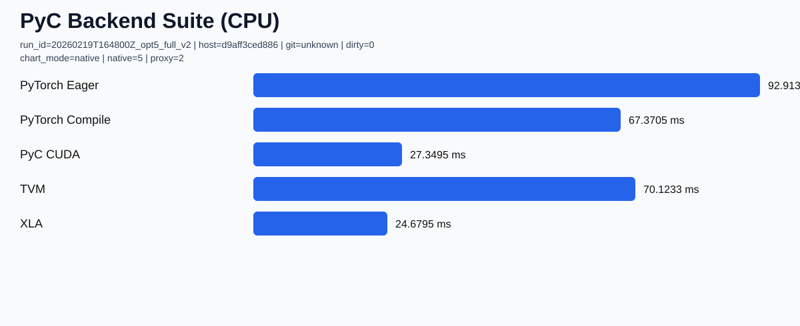
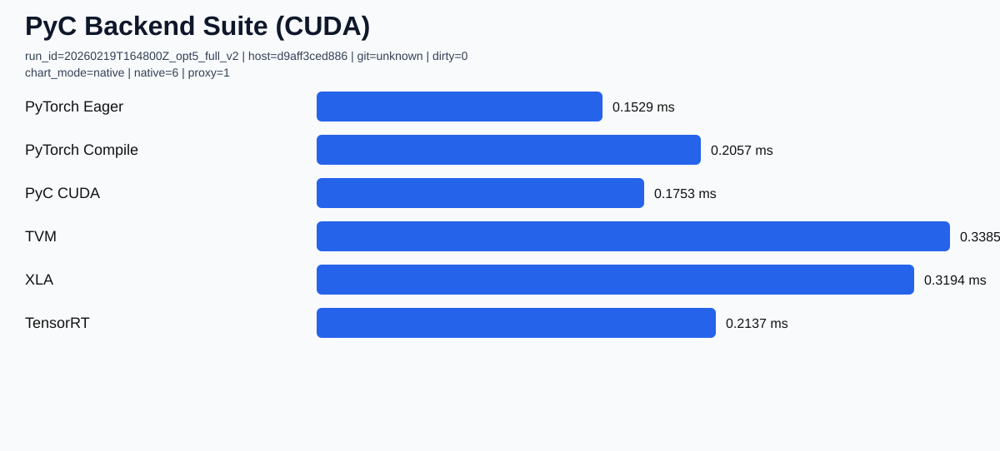

Production compiler rails for ML systems
Distributed training with deterministic controls, measurable throughput, and visible bottleneck telemetry.
PyC packages compiler-next contracts, runtime fallbacks, and benchmark publication into a single operational loop. CPU orchestration and GPU execution are intentionally split, then rejoined through instrumentation so performance changes are explainable.
Loading release metadata...
Operational Flow
Runtime stages are coordinated as a conveyor: host-side preprocessing, pinned-memory transfer, GPU compute, communication sync, then telemetry publication. This keeps throughput high while preserving deterministic rollback behavior.
Install and Validate
cmake -S . -B build -D PYC_BUILD_COMPILER_NEXT=ON -D PYC_BUILD_COMPILER_NEXT_TESTS=ON
cmake --build build --parallel
ctest --test-dir build -C Release --output-on-failure
./build/pycBinary downloads:
- Linux: pyc-linux-x86_64.tar.gz
- macOS: pyc-macos-arm64.tar.gz
- Windows: pyc-windows-x86_64.zip
Latest Distributed Evidence
Loading distributed training insights...
Published artifacts: manifest.json | latest-summary.json | distributed-latest.json
Compiler Adapter Baseline
Loading benchmark publication data...
CPU Adapter Summary
| Adapter | Mode | Mean (ms) | P50 (ms) | P95 (ms) | Throughput |
|---|
GPU Adapter Summary
| Adapter | Mode | Mean (ms) | P50 (ms) | P95 (ms) | Throughput |
|---|

